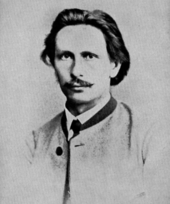

Karl Benz, 1869, 25 years old (Zenodot Verlagsges.)
Karl Benz nasceu Karl Friedrich Michael Vaillant, em 25 de novembro de 1844, em Mühlburg, agora um bairro de Karlsruhe, Baden-Württemberg, que faz parte da Alemanha moderna, para Josephine Vaillant e um locomotiva, Johann George Benz, com quem ela se casou com alguns Meses depois. De acordo com o direito alemão, a criança adquiriu o nome "Benz" por casamento legal de seus pais Benz e Vaillant.
Quando ele tinha dois anos, seu pai morreu de pneumonia, e seu nome foi mudado para Karl Friedrich Benz em memória de seu pai.
Apesar de viver na pobreza, a mãe se esforçou para dar-lhe uma boa educação. Benz frequentou a Escola de Gramática local em Karlsruhe e foi um estudante prodigioso. Em 1853, com a idade de nove anos, ele começou no Lyceum orientado cientificamente. Em seguida, ele estudou na Poly-Technical University sob as instruções de Ferdinand Redtenbacher.
Benz originalmente focalizou seus estudos em serralheria, mas ele finalmente seguiu os passos de seu pai em direção à engenharia de locomotivas. Em 30 de setembro de 1860, aos 15 anos, passou no vestibular para engenharia mecânica da Universidade de Karlsruhe, que posteriormente participou. Benz graduou-se em 9 de julho de 1864 com 19 anos.
Durante esses anos, ao andar de bicicleta, ele começou a imaginar conceitos para um veículo que acabaria por se tornar o carro sem cavalos.
Após a sua educação formal, Benz teve sete anos de formação profissional em várias empresas, mas não se encaixou em nenhuma delas. O treinamento começou em Karlsruhe com dois anos de empregos variados em uma empresa de engenharia mecânica.
Em seguida, mudou-se para Mannheim para trabalhar como desenhista e designer em uma fábrica de balanças. Em 1868, ele foi para Pforzheim para trabalhar para uma empresa de construção de ponte Gebrüder Benckiser Eisenwerke und Maschinenfabrik. Finalmente, ele foi para Viena por um curto período para trabalhar em uma empresa de construção de ferro.
A primeira fábrica de Benz e as invenções iniciais (1871-1882)
Em 1871, aos vinte e sete anos, Karl Benz juntou-se a August Ritter no lançamento da oficina de fundição de ferro e mecânica em Mannheim, mais tarde renomeada fábrica para máquinas para trabalho em chapa metálica.
O primeiro ano da empresa foi muito mal. Ritter acabou por não ser confiável, e as ferramentas do negócio foram confiscadas. A dificuldade foi superada quando a noiva de Benz, Bertha Ringer, comprou a participação da Ritter na empresa usando seu dote.
Em 20 de julho de 1872, Karl Benz e Bertha Ringer se casaram. Eles tiveram cinco filhos: Eugen (1873), Richard (1874), Clara (1877), Thilde (1882) e Ellen (1890).
Apesar dos infortúnios do negócio, Karl Benz liderou o desenvolvimento de novos motores na fábrica inicial que ele e sua esposa possuíam. Para obter mais receitas, em 1878 ele começou a trabalhar com novas patentes. Primeiro, ele concentrou todos os seus esforços na criação de um motor confiável de dois tempos de gasolina. Benz terminou seu motor de dois tempos em 31 de dezembro de 1878, véspera de Ano Novo, e foi concedida uma patente para isso em 1879.
Karl Benz mostrou seu verdadeiro gênio, no entanto, através de suas sucessivas invenções registradas ao projetar o que se tornaria o padrão de produção para o seu motor de dois tempos. Benz brevemente patenteou o sistema de regulação de velocidade, a ignição usando faíscas com bateria, a vela de ignição, o carburador, a embreagem, a mudança de marchas e o radiador de água.
Benz's Gasmotoren-Fabrik Mannheim (1882–1883)
Problemas surgiram novamente quando os bancos de Mannheim exigiram que a empresa de Bertha e Karl Benz fosse incorporada devido aos altos custos de produção que manteve. Os Benz foram forçados a improvisar uma associação com o fotógrafo Emil Bühler e seu irmão (um comerciante de queijo), para obter apoio bancário adicional. A empresa tornou-se a sociedade anônima Gasmotoren Fabrik Mannheim em 1882.
Após todos os acordos de incorporação necessários, Benz ficou infeliz porque ficou com apenas cinco por cento das ações e um modesto cargo de diretor. O pior de tudo, suas idéias não foram consideradas ao projetar novos produtos, então retirou-se dessa empresa apenas um ano depois, em 1883.